Companion to the DMRN+21 abstract by Pablo Tablas de Paula, Emmanouil Benetos and Joshua D. Reiss (Centre for Digital Music, Queen Mary University of London). Code: github.com/ptablasdpaula/DMRN21-Kirchhoff_Carrier_String.
The abstract shows that a nonlinear FDTD Kirchhoff–Carrier string can be backpropagated quickly and in flat memory with a cached CUDA adjoint. This page shows two things those gradients are for: fitting the string to recorded guitar notes, and steering it with text through a CLAP embedding. Every optimisation below keeps the string's physical parameters inside a box by a sigmoid reparameterisation, uses Adam with per-candidate plateau decay, and runs many candidates as one GPU batch.
Target notes come from the NSynth dataset's acoustic-guitar subset, excluding notes labelled with the reverb, distortion, multiphonic or tempo-synced qualities (test: 481 acoustic-guitar notes of 4096, reverb −101, distortion −12, multiphonic −0, tempo-synced −41, pool 327). Each note is trimmed to its first 3 s. All ten string parameters are fitted blind: density, tension, radius, Young's modulus, length, pluck amplitude, the two damping coefficients, and the pluck and pickup positions. The pitch label is never used in the fit; it is only reported afterwards. The loss is the cumulative energy loss (cels-audio, log-weighted, time-forward directions) on unit-RMS waveforms at 16 kHz, so level is not fitted and the pluck amplitude acts only through the string's nonlinearity. No body model is used.
Stage A runs 128 quasi-random starts over a whole string family (steel-core or nylon-core homogeneous equivalents) on a coarse grid whose interval count is set by the family's highest fundamental; stage B refines the eight best distinct candidates in a narrow box around the winner on a grid with as many intervals as that box allows. Both stages use Adam on box logits with per-candidate plateau decay and keep each candidate's lowest-loss iterate.
target (level-matched)
fit
| metric | value |
|---|---|
| CeL (lower is better) | 0.03195 |
| log-spectral distance | 27.3 dB |
| fitted f₁ | 82.09 Hz (-7 cents vs label) |
| inharmonicity B | 2.17e-04 |
| mass per length μ | 5.14 g/m |
| stage A / B evaluations | 401 / 151 |
| stage A / B grid | 68 intervals at 160 kHz / 170 at 96 kHz |
On a family-box bound: material_density, tension, radius, young_modulus, sigma_1. The waveform does not pin these down individually; see the caveat above.
| parameter | fitted |
|---|---|
| density ρ | 8093 kg/m³ |
| tension T | 45.14 N |
| radius r | 0.45 mm |
| Young's modulus E | 10.1 GPa |
| length L | 57.1 cm |
| pluck amplitude | 1.81 mm |
| σ₀ | 0.709 s⁻¹ |
| σ₁ | 4.97e-03 m²/s |
| pluck position | 0.211 |
| pickup position | 0.718 |
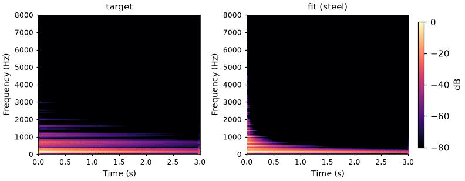
optimisation, iteration 0 to the end (current best candidate)
Nearest real strings (D'Addario) by (μ, T, B) in log space, over 25.5 in, 24.75 in and 650 mm scales and frets 0–12:
| string | construction | gauge (in) | scale | fret | predicted T | predicted B | distance |
|---|---|---|---|---|---|---|---|
| PB036 | phosphor bronze wound | 0.036 | 24.75 in (Gibson) | 2 | 41 N | 2.08e-04 | 0.132 |
| PB036 | phosphor bronze wound | 0.036 | 25.5 in (steel acoustic) | 2 | 43 N | 1.84e-04 | 0.143 |
| PB036 | phosphor bronze wound | 0.036 | 650 mm (classical) | 2 | 43 N | 1.82e-04 | 0.149 |
target (level-matched)
fit
| metric | value |
|---|---|
| CeL (lower is better) | 0.02989 |
| log-spectral distance | 27.9 dB |
| fitted f₁ | 82.11 Hz (-6 cents vs label) |
| inharmonicity B | 1.18e-04 |
| mass per length μ | 7.18 g/m |
| stage A / B evaluations | 401 / 151 |
| stage A / B grid | 60 intervals at 160 kHz / 194 at 96 kHz |
On a family-box bound: material_density, amplitude. The waveform does not pin these down individually; see the caveat above.
| parameter | fitted |
|---|---|
| density ρ | 6476 kg/m³ |
| tension T | 42.07 N |
| radius r | 0.594 mm |
| Young's modulus E | 1.12 GPa |
| length L | 46.62 cm |
| pluck amplitude | 4.96 mm |
| σ₀ | 0.586 s⁻¹ |
| σ₁ | 4.72e-03 m²/s |
| pluck position | 0.277 |
| pickup position | 0.795 |
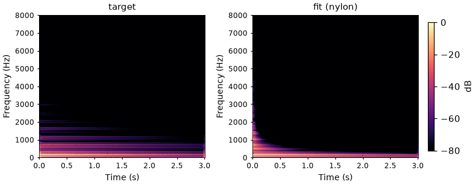
optimisation, iteration 0 to the end (current best candidate)
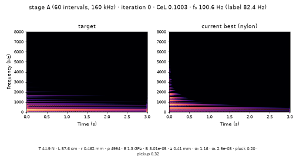
Nearest real strings (D'Addario) by (μ, T, B) in log space, over 25.5 in, 24.75 in and 650 mm scales and frets 0–12:
| string | construction | gauge (in) | scale | fret | predicted T | predicted B | distance |
|---|---|---|---|---|---|---|---|
| PB042 | phosphor bronze wound | 0.042 | 25.5 in (steel acoustic) | 2 | 59 N | 1.58e-04 | 0.403 |
| PB042 | phosphor bronze wound | 0.042 | 650 mm (classical) | 2 | 59 N | 1.56e-04 | 0.404 |
| PB042 | phosphor bronze wound | 0.042 | 24.75 in (Gibson) | 2 | 55 N | 1.78e-04 | 0.409 |
target (level-matched)
fit
| metric | value |
|---|---|
| CeL (lower is better) | 0.02967 |
| log-spectral distance | 27.9 dB |
| fitted f₁ | 146 Hz (-9 cents vs label) |
| inharmonicity B | 2.14e-04 |
| mass per length μ | 1.85 g/m |
| stage A / B evaluations | 401 / 151 |
| stage A / B grid | 68 intervals at 160 kHz / 118 at 96 kHz |
On a family-box bound: amplitude. The waveform does not pin these down individually; see the caveat above.
| parameter | fitted |
|---|---|
| density ρ | 7543 kg/m³ |
| tension T | 53.39 N |
| radius r | 0.28 mm |
| Young's modulus E | 81.6 GPa |
| length L | 58.14 cm |
| pluck amplitude | 4.97 mm |
| σ₀ | 0.414 s⁻¹ |
| σ₁ | 4.92e-03 m²/s |
| pluck position | 0.281 |
| pickup position | 0.794 |
optimisation, iteration 0 to the end (current best candidate)
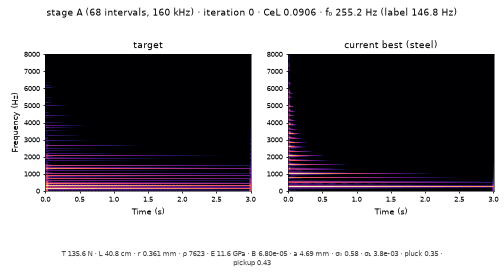
Nearest real strings (D'Addario) by (μ, T, B) in log space, over 25.5 in, 24.75 in and 650 mm scales and frets 0–12:
| string | construction | gauge (in) | scale | fret | predicted T | predicted B | distance |
|---|---|---|---|---|---|---|---|
| PB024 | phosphor bronze wound | 0.024 | 25.5 in (steel acoustic) | 4 | 47 N | 1.82e-04 | 0.209 |
| PB024 | phosphor bronze wound | 0.024 | 650 mm (classical) | 4 | 47 N | 1.79e-04 | 0.21 |
| PB024 | phosphor bronze wound | 0.024 | 24.75 in (Gibson) | 4 | 44 N | 2.05e-04 | 0.224 |
target (level-matched)
fit
| metric | value |
|---|---|
| CeL (lower is better) | 0.02974 |
| log-spectral distance | 28.1 dB |
| fitted f₁ | 146.5 Hz (-4 cents vs label) |
| inharmonicity B | 3.03e-04 |
| mass per length μ | 2.3 g/m |
| stage A / B evaluations | 401 / 151 |
| stage A / B grid | 60 intervals at 160 kHz / 118 at 96 kHz |
| parameter | fitted |
|---|---|
| density ρ | 3309 kg/m³ |
| tension T | 44.05 N |
| radius r | 0.471 mm |
| Young's modulus E | 7.82 GPa |
| length L | 47.21 cm |
| pluck amplitude | 4.95 mm |
| σ₀ | 0.407 s⁻¹ |
| σ₁ | 3.29e-03 m²/s |
| pluck position | 0.28 |
| pickup position | 0.206 |
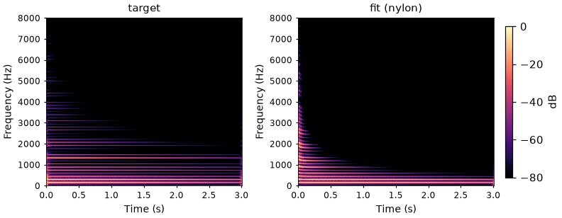
optimisation, iteration 0 to the end (current best candidate)
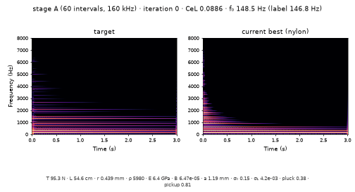
Nearest real strings (D'Addario) by (μ, T, B) in log space, over 25.5 in, 24.75 in and 650 mm scales and frets 0–12:
| string | construction | gauge (in) | scale | fret | predicted T | predicted B | distance |
|---|---|---|---|---|---|---|---|
| PB026 | phosphor bronze wound | 0.026 | 24.75 in (Gibson) | 6 | 41 N | 2.83e-04 | 0.098 |
| PB026 | phosphor bronze wound | 0.026 | 650 mm (classical) | 7 | 39 N | 3.12e-04 | 0.128 |
| PB026 | phosphor bronze wound | 0.026 | 25.5 in (steel acoustic) | 7 | 39 N | 3.17e-04 | 0.136 |
target (level-matched)
fit
| metric | value |
|---|---|
| CeL (lower is better) | 0.02442 |
| log-spectral distance | 27.7 dB |
| fitted f₁ | 246.6 Hz (-2 cents vs label) |
| inharmonicity B | 2.06e-04 |
| mass per length μ | 0.908 g/m |
| stage A / B evaluations | 401 / 151 |
| stage A / B grid | 68 intervals at 160 kHz / 92 at 96 kHz |
| parameter | fitted |
|---|---|
| density ρ | 7335 kg/m³ |
| tension T | 46.99 N |
| radius r | 0.198 mm |
| Young's modulus E | 171 GPa |
| length L | 46.13 cm |
| pluck amplitude | 4.76 mm |
| σ₀ | 0.334 s⁻¹ |
| σ₁ | 3.56e-03 m²/s |
| pluck position | 0.361 |
| pickup position | 0.284 |
optimisation, iteration 0 to the end (current best candidate)
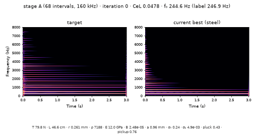
Nearest real strings (D'Addario) by (μ, T, B) in log space, over 25.5 in, 24.75 in and 650 mm scales and frets 0–12:
| string | construction | gauge (in) | scale | fret | predicted T | predicted B | distance |
|---|---|---|---|---|---|---|---|
| J4503 | clear nylon | 0.040 | 24.75 in (Gibson) | 4 | 51 N | 2.22e-04 | 0.123 |
| J4603 | clear nylon | 0.041 | 24.75 in (Gibson) | 4 | 52 N | 2.23e-04 | 0.128 |
| J4603 | clear nylon | 0.041 | 650 mm (classical) | 5 | 49 N | 2.46e-04 | 0.148 |
target (level-matched)
fit
| metric | value |
|---|---|
| CeL (lower is better) | 0.02462 |
| log-spectral distance | 27.9 dB |
| fitted f₁ | 247.4 Hz (+3 cents vs label) |
| inharmonicity B | 5.19e-04 |
| mass per length μ | 1.39 g/m |
| stage A / B evaluations | 374 / 151 |
| stage A / B grid | 60 intervals at 160 kHz / 74 at 96 kHz |
| parameter | fitted |
|---|---|
| density ρ | 1851 kg/m³ |
| tension T | 41.38 N |
| radius r | 0.488 mm |
| Young's modulus E | 5.95 GPa |
| length L | 34.92 cm |
| pluck amplitude | 4.94 mm |
| σ₀ | 0.33 s⁻¹ |
| σ₁ | 2.04e-03 m²/s |
| pluck position | 0.283 |
| pickup position | 0.36 |
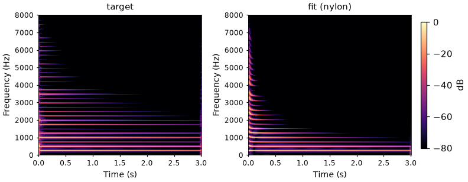
optimisation, iteration 0 to the end (current best candidate)
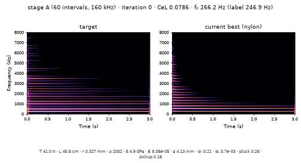
Nearest real strings (D'Addario) by (μ, T, B) in log space, over 25.5 in, 24.75 in and 650 mm scales and frets 0–12:
| string | construction | gauge (in) | scale | fret | predicted T | predicted B | distance |
|---|---|---|---|---|---|---|---|
| PB020 | phosphor bronze wound | 0.020 | 24.75 in (Gibson) | 11 | 39 N | 4.92e-04 | 0.0776 |
| PB020 | phosphor bronze wound | 0.020 | 650 mm (classical) | 12 | 37 N | 5.42e-04 | 0.114 |
| PB020 | phosphor bronze wound | 0.020 | 25.5 in (steel acoustic) | 12 | 37 N | 5.50e-04 | 0.123 |
target (level-matched)
fit
| metric | value |
|---|---|
| CeL (lower is better) | 0.03398 |
| log-spectral distance | 22.6 dB |
| fitted f₁ | 387.8 Hz (-19 cents vs label) |
| inharmonicity B | 1.04e-03 |
| mass per length μ | 2.55 g/m |
| stage A / B evaluations | 401 / 151 |
| stage A / B grid | 68 intervals at 160 kHz / 54 at 96 kHz |
On a family-box bound: young_modulus, length, amplitude, sigma_1, pluck_position. The waveform does not pin these down individually; see the caveat above.
| parameter | fitted |
|---|---|
| density ρ | 7912 kg/m³ |
| tension T | 161.7 N |
| radius r | 0.32 mm |
| Young's modulus E | 218 GPa |
| length L | 32.51 cm |
| pluck amplitude | 5 mm |
| σ₀ | 1.53 s⁻¹ |
| σ₁ | 4.99e-03 m²/s |
| pluck position | 0.499 |
| pickup position | 0.621 |
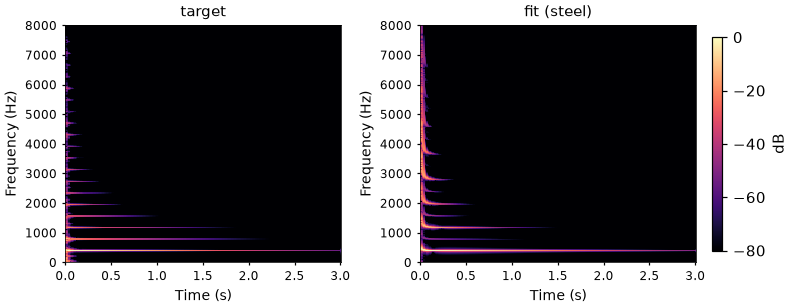
optimisation, iteration 0 to the end (current best candidate)
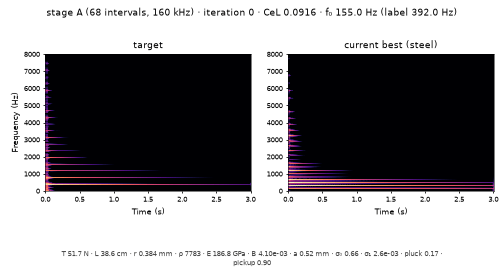
Nearest real strings (D'Addario) by (μ, T, B) in log space, over 25.5 in, 24.75 in and 650 mm scales and frets 0–12:
| string | construction | gauge (in) | scale | fret | predicted T | predicted B | distance |
|---|---|---|---|---|---|---|---|
| PL018 | plain steel | 0.018 | 25.5 in (steel acoustic) | 12 | 81 N | 4.82e-04 | 1.12 |
| PL018 | plain steel | 0.018 | 650 mm (classical) | 12 | 81 N | 4.76e-04 | 1.12 |
| PL018 | plain steel | 0.018 | 24.75 in (Gibson) | 12 | 76 N | 5.44e-04 | 1.12 |
target (level-matched)
fit
| metric | value |
|---|---|
| CeL (lower is better) | 0.03572 |
| log-spectral distance | 23.3 dB |
| fitted f₁ | 389 Hz (-13 cents vs label) |
| inharmonicity B | 9.17e-04 |
| mass per length μ | 1.02 g/m |
| stage A / B evaluations | 401 / 151 |
| stage A / B grid | 60 intervals at 160 kHz / 58 at 96 kHz |
On a family-box bound: material_density, young_modulus, length, amplitude, sigma_1. The waveform does not pin these down individually; see the caveat above.
| parameter | fitted |
|---|---|
| density ρ | 1014 kg/m³ |
| tension T | 65.58 N |
| radius r | 0.567 mm |
| Young's modulus E | 7.98 GPa |
| length L | 32.56 cm |
| pluck amplitude | 5 mm |
| σ₀ | 1.5 s⁻¹ |
| σ₁ | 4.99e-03 m²/s |
| pluck position | 0.381 |
| pickup position | 0.5 |
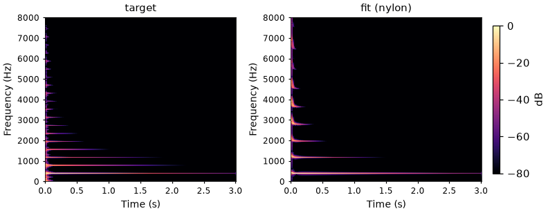
optimisation, iteration 0 to the end (current best candidate)
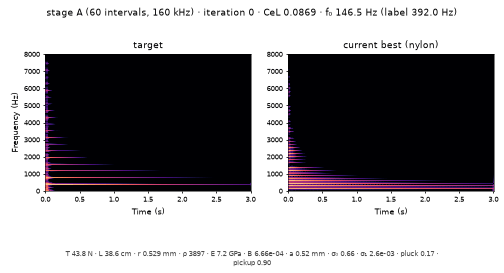
Nearest real strings (D'Addario) by (μ, T, B) in log space, over 25.5 in, 24.75 in and 650 mm scales and frets 0–12:
| string | construction | gauge (in) | scale | fret | predicted T | predicted B | distance |
|---|---|---|---|---|---|---|---|
| PL017 | plain steel | 0.017 | 24.75 in (Gibson) | 12 | 68 N | 5.01e-04 | 0.444 |
| J4603 | clear nylon | 0.041 | 24.75 in (Gibson) | 12 | 51 N | 5.70e-04 | 0.454 |
| PL018 | plain steel | 0.018 | 24.75 in (Gibson) | 12 | 77 N | 5.40e-04 | 0.464 |
target (level-matched)
fit
| metric | value |
|---|---|
| CeL (lower is better) | 0.02311 |
| log-spectral distance | 18.8 dB |
| fitted f₁ | 659.7 Hz (+1 cents vs label) |
| inharmonicity B | 8.95e-05 |
| mass per length μ | 0.577 g/m |
| stage A / B evaluations | 401 / 151 |
| stage A / B grid | 68 intervals at 160 kHz / 50 at 96 kHz |
On a family-box bound: amplitude, sigma_0. The waveform does not pin these down individually; see the caveat above.
| parameter | fitted |
|---|---|
| density ρ | 7341 kg/m³ |
| tension T | 108.3 N |
| radius r | 0.158 mm |
| Young's modulus E | 216 GPa |
| length L | 32.84 cm |
| pluck amplitude | 4.98 mm |
| σ₀ | 1.91e-03 s⁻¹ |
| σ₁ | 4.70e-03 m²/s |
| pluck position | 0.37 |
| pickup position | 0.5 |
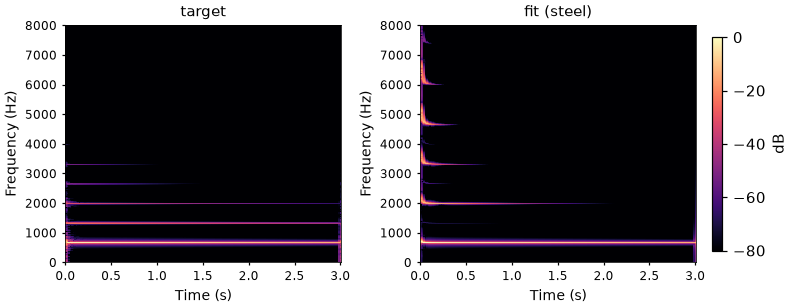
optimisation, iteration 0 to the end (current best candidate)
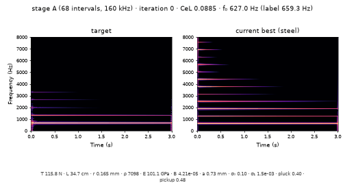
Nearest real strings (D'Addario) by (μ, T, B) in log space, over 25.5 in, 24.75 in and 650 mm scales and frets 0–12:
| string | construction | gauge (in) | scale | fret | predicted T | predicted B | distance |
|---|---|---|---|---|---|---|---|
| PL012 | plain steel | 0.012 | 24.75 in (Gibson) | 11 | 110 N | 8.73e-05 | 0.0262 |
| PL012 | plain steel | 0.012 | 650 mm (classical) | 12 | 105 N | 9.63e-05 | 0.0628 |
| PL012 | plain steel | 0.012 | 25.5 in (steel acoustic) | 12 | 104 N | 9.76e-05 | 0.0749 |
target (level-matched)
fit
| metric | value |
|---|---|
| CeL (lower is better) | 0.02344 |
| log-spectral distance | 17.5 dB |
| fitted f₁ | 660.2 Hz (+3 cents vs label) |
| inharmonicity B | 9.78e-05 |
| mass per length μ | 0.431 g/m |
| stage A / B evaluations | 401 / 151 |
| stage A / B grid | 60 intervals at 160 kHz / 44 at 96 kHz |
On a family-box bound: young_modulus, amplitude, sigma_0, pluck_position. The waveform does not pin these down individually; see the caveat above.
| parameter | fitted |
|---|---|
| density ρ | 1129 kg/m³ |
| tension T | 83.66 N |
| radius r | 0.348 mm |
| Young's modulus E | 7.99 GPa |
| length L | 33.38 cm |
| pluck amplitude | 5 mm |
| σ₀ | 1.21e-03 s⁻¹ |
| σ₁ | 4.85e-03 m²/s |
| pluck position | 0.497 |
| pickup position | 0.37 |
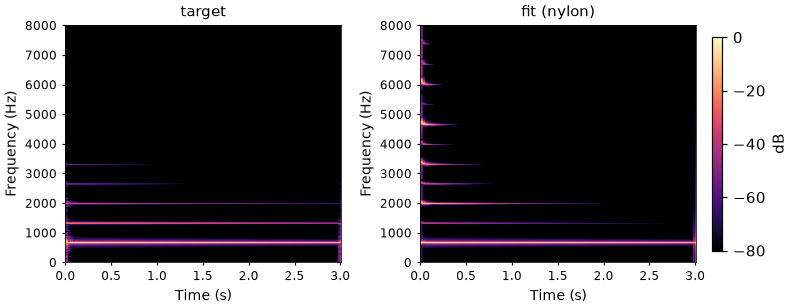
optimisation, iteration 0 to the end (current best candidate)
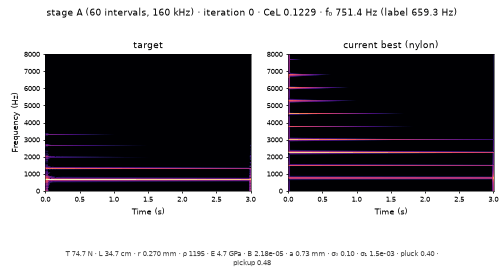
Nearest real strings (D'Addario) by (μ, T, B) in log space, over 25.5 in, 24.75 in and 650 mm scales and frets 0–12:
| string | construction | gauge (in) | scale | fret | predicted T | predicted B | distance |
|---|---|---|---|---|---|---|---|
| PL011 | plain steel | 0.011 | 24.75 in (Gibson) | 12 | 82 N | 9.79e-05 | 0.107 |
| PL011 | plain steel | 0.011 | 25.5 in (steel acoustic) | 12 | 88 N | 8.69e-05 | 0.142 |
| J4601 | clear nylon | 0.029 | 650 mm (classical) | 10 | 90 N | 1.09e-04 | 0.149 |
Following Text2FX, the string's parameters are optimised so that the CLAP audio embedding of the rendered sound moves along the direction from a contrasting prompt to a target prompt (the directional objective). The string box is wide: stress 50 MPa–1 GPa, radius 0.15–0.6 mm, length 0.5–1 m, a material axis from nylon to steel, dampings over three decades, and free pluck and pickup positions. Each 2.5 s clip is peak-normalised before CLAP (so loudness is not a lever) and tiled four times to CLAP's 10 s window, exactly as the model's own preprocessing does. Every prompt pair is run in both directions from the same 32 starts (start 0 is the paper's string).
184 intervals at 576 kHz internal rate, 48 kHz output, 301 iterations, 22 min on NVIDIA A100 80GB PCIe; baseline similarities to the two prompts: silence 0.324, 0.337, white noise -0.225, 0.041.
start 15: similarity to target -0.059 → 0.451 (gain +0.510); f₀ 77 → 76 Hz
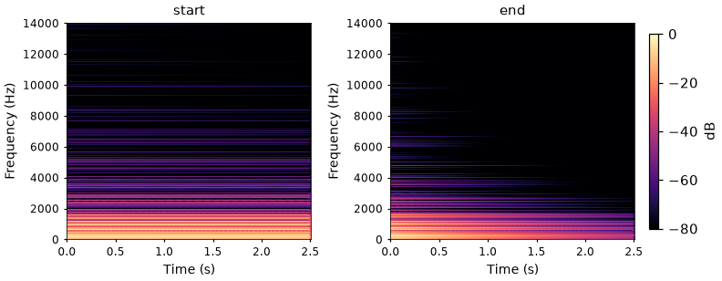
start 21: similarity to target -0.016 → 0.486 (gain +0.502); f₀ 600 → 683 Hz
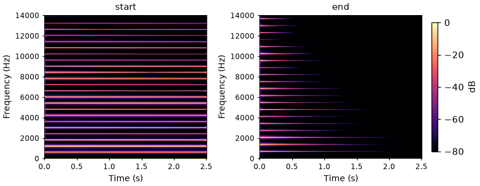
start 18: similarity to target 0.034 → 0.434 (gain +0.400); f₀ 220 → 216 Hz
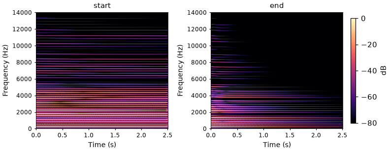
optimisation of the best start, iteration 0 to the end
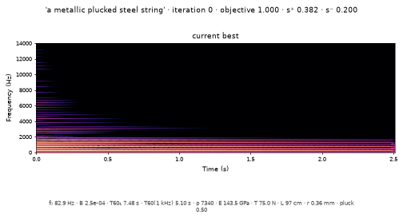
| start | s⁺ start | s⁺ end | gain | f₀ (Hz) | B | T60₁ (s) | ρ | E (GPa) | T (N) |
|---|---|---|---|---|---|---|---|---|---|
| 15 | -0.059 | 0.451 | +0.510 | 76 | 1.29e-04 | 4.45 | 7051 | 132.0 | 28 |
| 21 | -0.016 | 0.486 | +0.502 | 683 | 1.91e-06 | 1.71 | 1827 | 7.9 | 78 |
| 18 | 0.034 | 0.434 | +0.400 | 216 | 2.39e-04 | 3.25 | 7277 | 141.0 | 294 |
| 17 | 0.123 | 0.481 | +0.358 | 267 | 2.36e-06 | 3.30 | 1400 | 4.5 | 44 |
| 11 | 0.097 | 0.439 | +0.342 | 102 | 1.53e-04 | 4.86 | 4729 | 57.3 | 9 |
| 8 | 0.152 | 0.458 | +0.305 | 151 | 9.74e-05 | 5.70 | 2010 | 9.6 | 127 |
| 4 | 0.240 | 0.459 | +0.219 | 119 | 8.02e-05 | 5.76 | 2028 | 9.8 | 67 |
| 26 | 0.274 | 0.477 | +0.203 | 266 | 9.36e-05 | 2.89 | 4310 | 47.3 | 678 |
start 30: similarity to target 0.004 → 0.210 (gain +0.207); f₀ 215 → 226 Hz
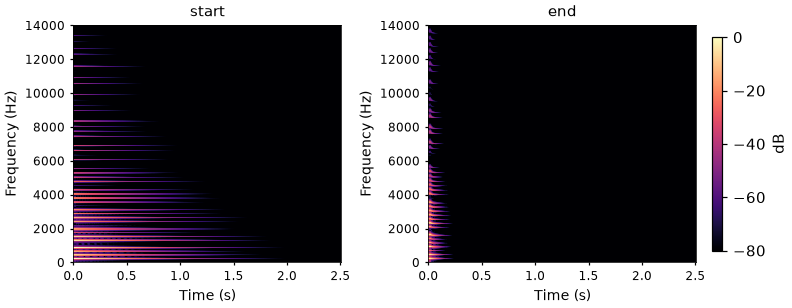
start 23: similarity to target 0.039 → 0.199 (gain +0.160); f₀ 191 → 208 Hz
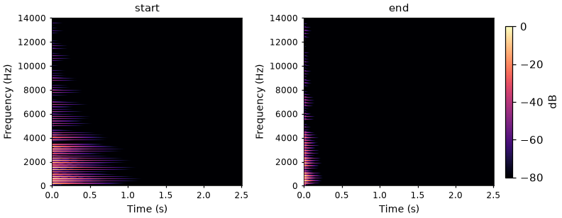
start 4: similarity to target -0.001 → 0.133 (gain +0.134); f₀ 105 → 101 Hz
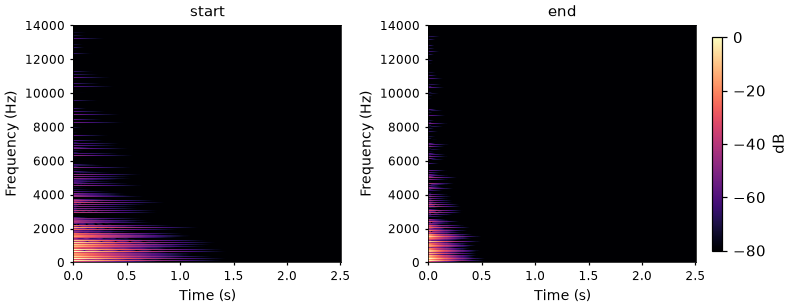
optimisation of the best start, iteration 0 to the end
| start | s⁺ start | s⁺ end | gain | f₀ (Hz) | B | T60₁ (s) | ρ | E (GPa) | T (N) |
|---|---|---|---|---|---|---|---|---|---|
| 30 | 0.004 | 0.210 | +0.207 | 226 | 2.84e-04 | 0.18 | 6752 | 120.5 | 161 |
| 23 | 0.039 | 0.199 | +0.160 | 208 | 8.05e-05 | 0.18 | 1756 | 7.3 | 85 |
| 4 | -0.001 | 0.133 | +0.134 | 101 | 1.12e-04 | 0.39 | 2362 | 13.5 | 55 |
| 29 | 0.028 | 0.159 | +0.131 | 375 | 1.32e-06 | 0.22 | 1227 | 3.4 | 119 |
| 14 | 0.085 | 0.171 | +0.086 | 295 | 2.67e-05 | 0.16 | 2399 | 13.9 | 142 |
| 13 | 0.064 | 0.146 | +0.082 | 305 | 5.62e-05 | 0.22 | 3335 | 27.7 | 615 |
| 10 | 0.065 | 0.145 | +0.081 | 485 | 2.31e-06 | 29.29 | 1404 | 4.5 | 380 |
| 26 | 0.101 | 0.181 | +0.080 | 274 | 7.29e-05 | 0.16 | 4142 | 43.5 | 598 |
184 intervals at 576 kHz internal rate, 48 kHz output, 301 iterations, 22 min on NVIDIA A100 80GB PCIe; baseline similarities to the two prompts: silence 0.200, 0.271, white noise -0.055, 0.037.
start 21: similarity to target 0.087 → 0.251 (gain +0.164); f₀ 600 → 574 Hz
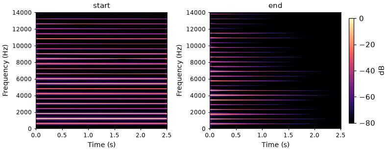
start 11: similarity to target 0.054 → 0.160 (gain +0.107); f₀ 114 → 92 Hz
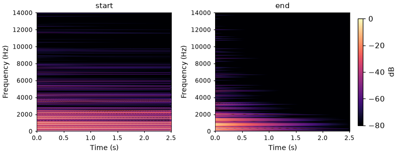
start 15: similarity to target -0.042 → 0.064 (gain +0.106); f₀ 77 → 69 Hz
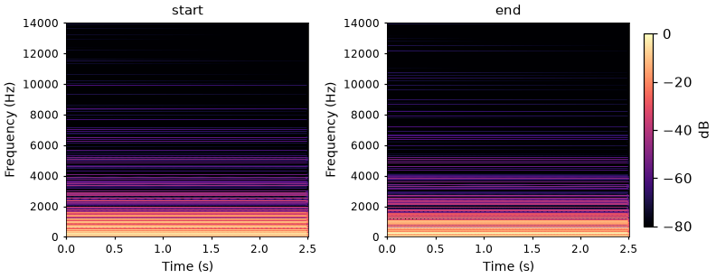
optimisation of the best start, iteration 0 to the end
| start | s⁺ start | s⁺ end | gain | f₀ (Hz) | B | T60₁ (s) | ρ | E (GPa) | T (N) |
|---|---|---|---|---|---|---|---|---|---|
| 21 | 0.087 | 0.251 | +0.164 | 574 | 3.49e-06 | 1.88 | 2308 | 12.8 | 89 |
| 11 | 0.054 | 0.160 | +0.107 | 92 | 2.16e-04 | 2.12 | 5198 | 69.9 | 9 |
| 15 | -0.042 | 0.064 | +0.106 | 69 | 2.03e-04 | 95.77 | 7274 | 140.8 | 32 |
| 17 | 0.022 | 0.125 | +0.103 | 284 | 2.59e-06 | 4.09 | 1374 | 4.4 | 58 |
| 8 | 0.097 | 0.200 | +0.103 | 167 | 7.98e-05 | 1.75 | 1895 | 8.5 | 138 |
| 25 | 0.135 | 0.209 | +0.074 | 416 | 4.33e-06 | 2.35 | 1629 | 6.2 | 66 |
| 1 | 0.194 | 0.243 | +0.050 | 187 | 6.40e-06 | 2.04 | 3665 | 33.7 | 41 |
| 12 | 0.180 | 0.228 | +0.048 | 202 | 7.11e-05 | 1.88 | 1307 | 3.9 | 25 |
start 3: similarity to target 0.185 → 0.374 (gain +0.189); f₀ 54 → 56 Hz
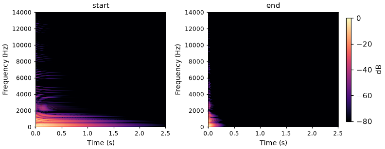
start 30: similarity to target 0.202 → 0.388 (gain +0.186); f₀ 215 → 217 Hz
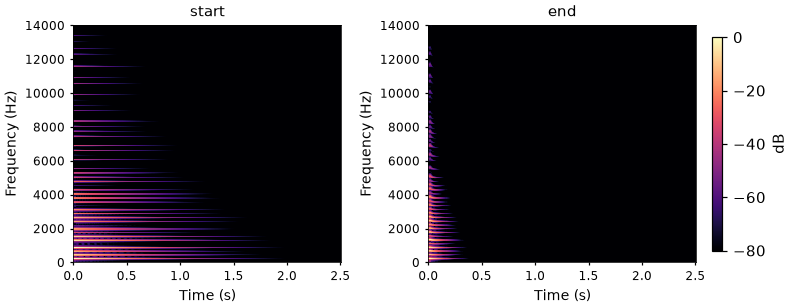
start 4: similarity to target 0.163 → 0.341 (gain +0.177); f₀ 105 → 125 Hz
optimisation of the best start, iteration 0 to the end
| start | s⁺ start | s⁺ end | gain | f₀ (Hz) | B | T60₁ (s) | ρ | E (GPa) | T (N) |
|---|---|---|---|---|---|---|---|---|---|
| 3 | 0.185 | 0.374 | +0.189 | 56 | 1.36e-03 | 0.25 | 7506 | 150.4 | 21 |
| 30 | 0.202 | 0.388 | +0.186 | 217 | 1.90e-04 | 0.28 | 6711 | 119.0 | 94 |
| 4 | 0.163 | 0.341 | +0.177 | 125 | 5.39e-05 | 0.53 | 1898 | 8.5 | 54 |
| 29 | 0.225 | 0.379 | +0.153 | 375 | 6.29e-06 | 0.30 | 1247 | 3.5 | 551 |
| 1 | 0.242 | 0.385 | +0.143 | 163 | 8.23e-06 | 47.61 | 4076 | 42.1 | 32 |
| 28 | 0.277 | 0.385 | +0.108 | 108 | 7.40e-04 | 90.51 | 3221 | 25.7 | 49 |
| 23 | 0.284 | 0.377 | +0.094 | 197 | 4.71e-05 | 0.55 | 1825 | 7.9 | 40 |
| 15 | 0.043 | 0.131 | +0.089 | 74 | 1.46e-04 | 117.67 | 7102 | 134.0 | 29 |
184 intervals at 576 kHz internal rate, 48 kHz output, 301 iterations, 22 min on NVIDIA A100 80GB PCIe; baseline similarities to the two prompts: silence 0.387, 0.267, white noise 0.022, 0.015.
start 21: similarity to target 0.126 → 0.516 (gain +0.390); f₀ 600 → 657 Hz
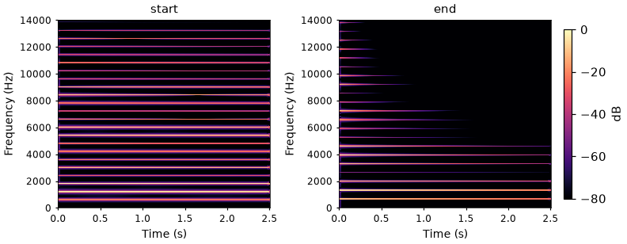
start 18: similarity to target 0.195 → 0.539 (gain +0.344); f₀ 220 → 174 Hz
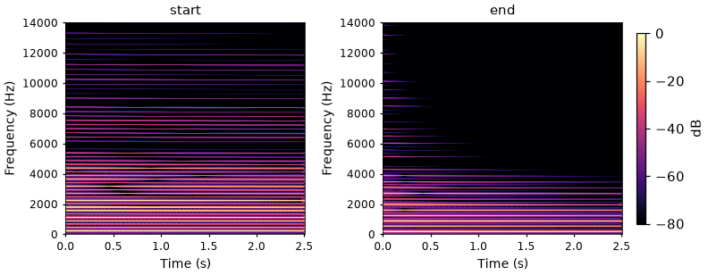
start 4: similarity to target 0.163 → 0.492 (gain +0.329); f₀ 105 → 134 Hz
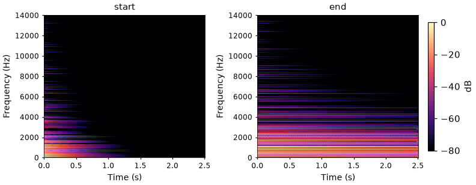
optimisation of the best start, iteration 0 to the end
| start | s⁺ start | s⁺ end | gain | f₀ (Hz) | B | T60₁ (s) | ρ | E (GPa) | T (N) |
|---|---|---|---|---|---|---|---|---|---|
| 21 | 0.126 | 0.516 | +0.390 | 657 | 2.29e-06 | 11.84 | 1935 | 8.9 | 84 |
| 18 | 0.195 | 0.539 | +0.344 | 174 | 2.34e-04 | 18.31 | 7544 | 151.9 | 192 |
| 4 | 0.163 | 0.492 | +0.329 | 134 | 7.57e-05 | 15.26 | 1883 | 8.4 | 87 |
| 25 | 0.200 | 0.472 | +0.273 | 236 | 9.03e-06 | 10.56 | 2182 | 11.4 | 32 |
| 29 | 0.218 | 0.473 | +0.255 | 359 | 1.97e-06 | 10.33 | 1225 | 3.4 | 166 |
| 15 | 0.251 | 0.499 | +0.248 | 65 | 2.15e-04 | 39.88 | 7381 | 145.2 | 26 |
| 14 | 0.220 | 0.463 | +0.243 | 296 | 5.19e-05 | 8.60 | 2434 | 14.3 | 262 |
| 3 | 0.244 | 0.480 | +0.236 | 46 | 5.34e-04 | 10.77 | 7890 | 166.9 | 8 |
start 12: similarity to target 0.170 → 0.475 (gain +0.305); f₀ 220 → 205 Hz
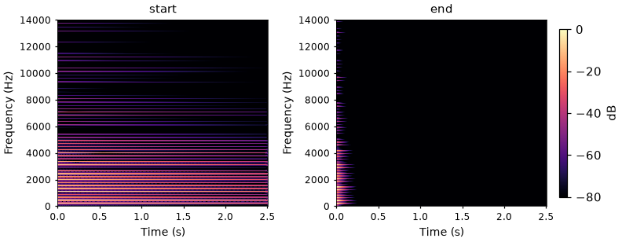
start 25: similarity to target 0.136 → 0.403 (gain +0.267); f₀ 286 → 333 Hz
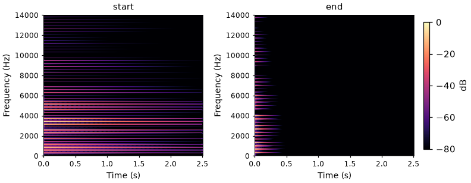
start 22: similarity to target 0.199 → 0.454 (gain +0.255); f₀ 116 → 78 Hz
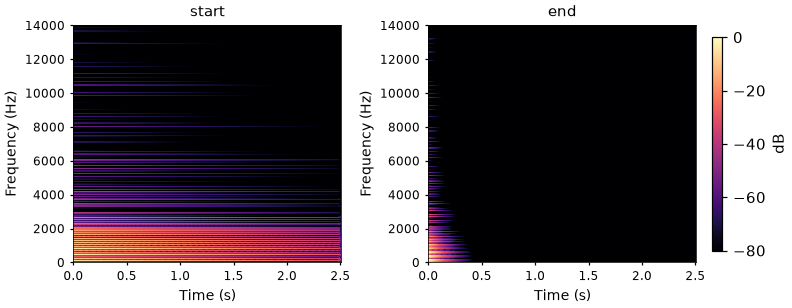
optimisation of the best start, iteration 0 to the end
| start | s⁺ start | s⁺ end | gain | f₀ (Hz) | B | T60₁ (s) | ρ | E (GPa) | T (N) |
|---|---|---|---|---|---|---|---|---|---|
| 12 | 0.170 | 0.475 | +0.305 | 205 | 8.09e-05 | 0.18 | 1297 | 3.9 | 29 |
| 25 | 0.136 | 0.403 | +0.267 | 333 | 6.21e-06 | 0.37 | 1812 | 7.7 | 54 |
| 22 | 0.199 | 0.454 | +0.255 | 78 | 5.01e-04 | 0.32 | 5763 | 86.6 | 130 |
| 3 | 0.288 | 0.507 | +0.218 | 54 | 6.68e-04 | 0.16 | 7529 | 151.3 | 11 |
| 4 | 0.242 | 0.437 | +0.196 | 102 | 1.15e-04 | 0.22 | 2330 | 13.1 | 59 |
| 31 | 0.305 | 0.485 | +0.180 | 132 | 1.40e-05 | 0.36 | 3129 | 24.2 | 12 |
| 2 | 0.273 | 0.450 | +0.177 | 435 | 9.97e-05 | 0.17 | 2671 | 17.4 | 521 |
| 5 | 0.221 | 0.392 | +0.171 | 257 | 3.38e-05 | 0.36 | 6472 | 110.4 | 86 |
184 intervals at 576 kHz internal rate, 48 kHz output, 239 iterations, 18 min on NVIDIA A100 80GB PCIe; baseline similarities to the two prompts: silence 0.318, 0.282, white noise 0.039, -0.041.
start 30: similarity to target 0.212 → 0.460 (gain +0.248); f₀ 215 → 210 Hz
start 4: similarity to target 0.178 → 0.420 (gain +0.243); f₀ 105 → 102 Hz
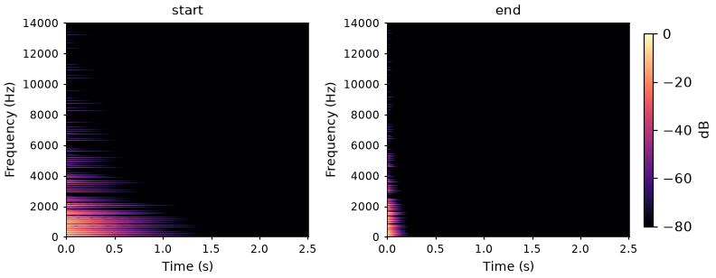
start 17: similarity to target 0.122 → 0.302 (gain +0.180); f₀ 316 → 477 Hz
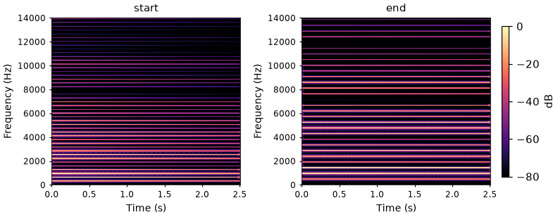
optimisation of the best start, iteration 0 to the end
| start | s⁺ start | s⁺ end | gain | f₀ (Hz) | B | T60₁ (s) | ρ | E (GPa) | T (N) |
|---|---|---|---|---|---|---|---|---|---|
| 30 | 0.212 | 0.460 | +0.248 | 210 | 5.30e-04 | 0.17 | 7069 | 132.7 | 214 |
| 4 | 0.178 | 0.420 | +0.243 | 102 | 1.25e-04 | 0.17 | 2389 | 13.8 | 59 |
| 17 | 0.122 | 0.302 | +0.180 | 477 | 1.98e-06 | 67.55 | 1230 | 3.4 | 136 |
| 14 | 0.307 | 0.438 | +0.131 | 477 | 2.67e-05 | 0.17 | 1790 | 7.6 | 488 |
| 26 | 0.324 | 0.451 | +0.126 | 309 | 3.96e-05 | 0.16 | 3691 | 34.2 | 441 |
| 24 | 0.335 | 0.458 | +0.122 | 77 | 2.57e-04 | 13.75 | 5807 | 88.0 | 54 |
| 28 | 0.288 | 0.410 | +0.122 | 102 | 1.00e-03 | 62.78 | 3587 | 32.2 | 51 |
| 29 | 0.266 | 0.386 | +0.120 | 371 | 2.45e-06 | 0.35 | 1214 | 3.4 | 215 |
start 21: similarity to target -0.017 → 0.231 (gain +0.248); f₀ 600 → 624 Hz
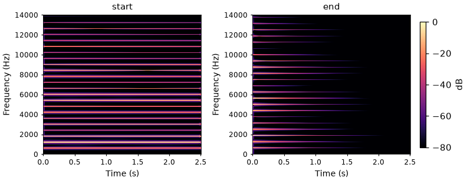
start 15: similarity to target 0.202 → 0.448 (gain +0.246); f₀ 77 → 64 Hz
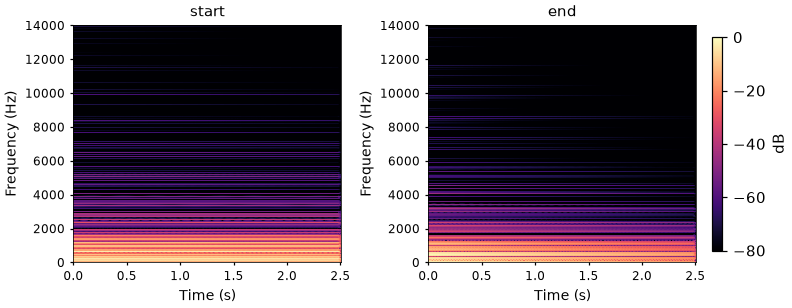
start 18: similarity to target 0.104 → 0.318 (gain +0.214); f₀ 220 → 199 Hz
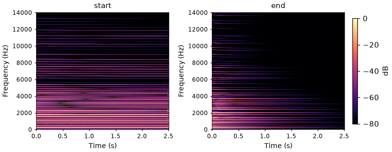
optimisation of the best start, iteration 0 to the end
| start | s⁺ start | s⁺ end | gain | f₀ (Hz) | B | T60₁ (s) | ρ | E (GPa) | T (N) |
|---|---|---|---|---|---|---|---|---|---|
| 21 | -0.017 | 0.231 | +0.248 | 624 | 2.97e-06 | 1.57 | 2069 | 10.2 | 95 |
| 15 | 0.202 | 0.448 | +0.246 | 64 | 1.33e-04 | 10.43 | 7348 | 143.8 | 16 |
| 18 | 0.104 | 0.318 | +0.214 | 199 | 1.61e-04 | 2.24 | 7222 | 138.7 | 197 |
| 17 | 0.023 | 0.176 | +0.153 | 306 | 1.64e-06 | 1.99 | 1343 | 4.1 | 45 |
| 11 | 0.194 | 0.346 | +0.152 | 78 | 2.61e-04 | 5.65 | 5790 | 87.5 | 8 |
| 10 | 0.184 | 0.317 | +0.132 | 474 | 1.26e-06 | 1.42 | 1421 | 4.7 | 202 |
| 25 | 0.102 | 0.223 | +0.121 | 255 | 8.00e-06 | 2.12 | 2090 | 10.4 | 35 |
| 6 | 0.251 | 0.360 | +0.109 | 265 | 7.99e-06 | 0.91 | 1675 | 6.6 | 75 |
The abstract keeps its correctness claims out of the page and in the repository. The cached adjoint is checked against three independent references; the numbers are from the runs behind the abstract.
benchmarks/native_rate_results/a100-sweep-1s-mae-si10-34855605.json, field validation.scaled_gradient_relative_l2).test/reference_paper_exact.py with --order 4; jobs 34846668 to 34846671).test/scalar_cache_algebra.py); the replay adjoint against an independent forward-mode Jacobian (test/adjoint.py); the cached adjoint against the replay on 4 s batches (test/scalar_cache_smoke.py); the spatial PyTorch baseline against a dual-number reference, positions included (test/figure_fdtd.py, test/positions.py).The derivation of the cached reverse pass and the full validation tables are in the technical note.
python -I experiments/applications/sound_matching/data.py --splits test python experiments/applications/sound_matching/fit.py --manifest .../selected/manifest.json --families steel,nylon --output RUN python experiments/applications/sound_matching/evaluate.py --run RUN --assets docs/supplement/sound_matching --output docs/supplement/sound_matching/results.json python experiments/applications/semantic/optimise.py --pair metallic_dull --output RUN_CLAP python experiments/applications/site.py --sound docs/supplement/sound_matching/results.json --semantic RUN_CLAP ...
Sources: NSynth (Engel et al. 2017); cels-audio (Tablas de Paula et al., ICASSP 2027 submission); CLAP laion/clap-htsat-unfused (Wu et al. 2023); Text2FX (Chu et al., ICASSP 2025); D'Addario string tension specifications; Woodhouse et al., Acta Acustica 98 (2012) Table I.